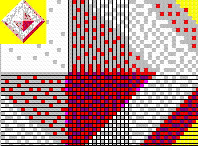

Praproceduro liveranta rezulton, kiaj abs, sin, ronde en Paskalo.
Angle: intrinsic
function, standard function, predefined function
Ruse:
встроенная функция
1996-02-29
Kvazaŭ-komento, pragmatika instrukcio por la tradukilo en kelkaj programlingvoj (ekz-e en Ada).
Angle: pragma
Ruse:
прагмат, прагма
1996-02-29
Vd sub semiotiko.
Angle:
pragmatics
Ruse: прагматика
1996-02-29
Noto. Sekve, nomi tiajn nenormajn «procedurojn» normaj estus malhonestaĵo.
Angle: standard procedure, predefined procedure,
intrinsic function
Ruse: встроенная процедура,
стандартная процедура, предопределённая
процедура
1996-02-29
Ω La ago legi en la ĉefmemoron el ekstera memoro (aŭ alia energi-nedependa memoro) programon kiu legos, lokos kaj startigos la ĉefan parton de sistemo. Kp startigo, malvolvo.
Angle: boot, booting, bootstrap(ping)
Germane: Urladen
France: chargement d'amorce
Ruse: начальная
загрузка
1996-02-29
 En radikhava
arbo, nodo N estas praulo de vertico V, se N situas en la vojo de la radiko al
V. Kp posteulo.
En radikhava
arbo, nodo N estas praulo de vertico V, se N situas en la vojo de la radiko al
V. Kp posteulo.
Rim. Evidentas analogio kun la koncerna rilato en genealogia arbo.
Angle: ancestor
Ruse: предок
1996-02-29
Tio, kio nepre estas la ĝusta maniero agi, la ĝusta decido. Kp Malpravaĵo.
Angle: the Right Thing
2003-06-04
Atribui al variabloj de programo komencajn valorojn (pravalorojn).
Angle: initialize
Ruse:
присвоить начальное значение,
инициализировать
1996-02-29
Vd ĉe pravalorizi.
Angle: initial value
Germane: Anfangswert
Ruse: начальное
значение
1996-02-29
Distingivo de nombroprezento. Ekz-e, la precizo «3 dekumaj ciferoj» ebligas distingadon inter mil eventualaj valoroj.
Rim. Precizo ne neprigas ekzakton. Ekz-e la ĝusta prezento de pi per 8 dekumaj ciferoj estas 3.1415927; la prezento de pi per 3.1415249 havas la precizon de 8 dekumaj ciferoj — kaj la relativan eraron ĉ. 1/50000 [IFIP71].
Angle: precision
Ruse: точность
1996-02-29
Baza nocio de matematika
logiko, kondiĉo prezentita en formala
lingvo. En predikato aperas variabloj
(nomoj de ajna objekto el la universo). Post
anstataŭigo de la variabloj je (nomoj de) individuaj objektoj, predikato
iĝas precize difinita propozicio. Ekz-e, el la
sekvaj predikatoj:
x² > 5
(x>9)∨(y<x);
(x+3 = y)
post la valorizo x:=3; y:=8 la unua predikato veros, la du aliaj malveros. Iuj aŭtoroj identigas ekvivalentajn predikatojn.
Angle: predicate
Ruse: предикат
1996-02-29
«… 2 Elektra ŝaltilo, kiun oni funkciigas, premante sur butonforman klavon» [PIV1].
Muso havas prembutonojn, kaj ankaŭ la respondaj ekranaj piktogramoj, per kiuj oni elektas agojn, estas tiel nomataj.
Angle: button, push button
Ruse: кнопка
1996-02-29
«Ĉiu el la du unuaj frazoj (maĵora kaj minora) de silogismo, el kiuj oni tiras konkludon» [PIV1].
Vd elimplikaciigo.
Angle: assumption,
premise, premiss
Ruse: посылка
1996-02-29
Laŭ PIV1,
Reprodukti per gravuritaj tabuloj aŭ metalaj literoj, ŝmiritaj per inko.Multaj komputilistoj preferas lasi al «presi» nur ĉi tiun sencon tipografian, kaj uzi por siaj specialaj celoj la vorton «printi». Kun la pli frue enradikiĝinta «tajpi» tio faras Esperanton tre distingema rilate al diversaj skribmanieroj.
Angle: print
Ruse: печатать
1996-02-29
Tiparo (en ties 1a senco).
Angle: font, fount
Germane: Druckschrift
Ruse: шрифт
1996-02-29
![[Prestipo]](BILDOJ/tipo.gif) Laŭ [PIV1],
Laŭ [PIV1],
tip*o (…) 3Kvankam tiu presteĥniko estas jam arkaika, mi faris bildon pri pressigno. Vd diko, dorso, kapo, noĉo, piedo, signobildo, staturo, ŝultro, tipara grado, trunko, ventro.Muldilo de preslitero, kaj tiu preslitero mem, provizita supre per bildo kaj flanke per noĉo: ĉar tiuj ĉi literoj estas uzataj tre malofte, tial neniu presisto volos prepari por ili apartajn tipojn [Z] — vd rekta, kursiva, magra, grasa, romana, antikva, gotika, fraktura, cicero, petito.
Sortimento da prestipoj estas tiparo.
Angle: type
France: caractère
Germane: Letter
Ruse: литера
1996-11-05
En markada lingvo, karakterizo de tekstopeco kiu devas
en la rezulta kompostita formo konservi la aranĝon de la fonto; kutime uzata
por prezenti programfragmentojn en artikoloj ktp; ekz-e la elemento
<PRE> … </PRE> en HTML.
Angle: preformated, verbatim
2001-05-13
 Parto de
la septavola etalona modelo (vd
tie).
Parto de
la septavola etalona modelo (vd
tie).
Angle: (data) presentation layer
Ruse:
уровень представления
1996-02-29
Fari el informo trakteblan datumon.
Rim. Per si mem «informo» estas ia «senkorpa mistero», kiu koncernas komputadon same malmulte, kiel la koncepto pri senmorta animo medicinon.
Noto. Iuj fakuloj, same kiel ni, uzas prezenti:
bitokvaro: kombino de 4 bitoj, kiu povas prezenti valorojn inter 0 kaj 15 [KBT]sed multaj aliaj imitas la anglan to represent per «reprezenti». Tiu lasta havas en Esperanto malpli vastan signifon ol ĝia falsa amiko angla — ekz-e enarkolongo: f=(f₁,…,fn) estu parametra prezento de derivebla kurbo … [EKV],
They represented their grievances to the Governor; Let me try to represent my ideas to you in different termsla ĝusta traduko estas per [PIV1]
prezent*i (…) 3 Starigi antaŭ ies imago la bildon de iu aŭ io: prezentu al vi mian embarason; Vi, kiun malsame ni prezentas, sed same ni sentas [Z]; … 4 Meti antaŭ ies okuloj imitaĵon de io, faritan per parolo, pentrado aŭ alia arto: … la bildo prezentas virinon [Z]; la skulptaĵo prezentis rozojn kaj tulipojn [Z]; la dekoracio prezentas placon kun benkoj; la danco prezentis marŝon [Kabe]; mi prezentis Julion Cezaron [Z]; tio estis verko simpla, prezentanta unu el la scenoj de la ĉiutaga vivo [Z]; la trajtoj de lia vizaĝo estis prezentataj (en la spegulo) tiel malĝuste, ke ili estis nerekoneblaj [Z]….Se oni tamen preferas reprezenti, oni almenaŭ atentu la regmodelon: «signo reprezentas signaton» — «ni reprezentigas la signaton per signo» (kp «la reĝo reprezentigis sin per sia ĉefministro» [PIV1]). La frazoj kiel
estas krude eraraj.Ni reprezentas arbonper la informoj, skribitaj ĉe ĝia radiko …
Ofte la angla to represent tradukeblas per malpli diskutindaj «signifi», «esprimi». Ŝajnas, ke la anglalingvanoj emas uzi to represent se temas pri interna prezento, kaj to present kiam temas pri eneligo (liverado), ekstera prezento (bildigo, surekranigo aŭ entajpado).
Lit. S. B. Pokrovskij. Prezenti kaj reprezenti // Matematiko Translimen. 1992. N-ro 7. P. 34–40.
Angle:
represent
Ruse: представить
1996-02-29
Maniero prezenti aŭ rezulto de prezentado; ekz-e glitpunkta prezento. Kp sintakso.
Angle: representation
Ruse: представление
1996-02-29
Akcesora datumo pri alia datumo, uzata por manipuli tiun duan datumon; ekz-e, tabelpriaĵo — vektoro da dimensiaj limoj kaj dimensiaj paŝoj, priskribanta tabelon.
Rim. Priaĵo kiu estas tenata konekse al la karakterizata datumo estas ties ĉapo.
Angle:
descriptor
Ruse: описатель, паспорт,
дескриптор
2003-07-14
 Apliki al datumo
aron da operacioj por pretigi ĝin al koncerna utiligo, ekz-e fari ĝin
legebla, sinteza, transmetebla, grafika ktp. Ekz-e vd konverto, serĉo, bildigo.
Apliki al datumo
aron da operacioj por pretigi ĝin al koncerna utiligo, ekz-e fari ĝin
legebla, sinteza, transmetebla, grafika ktp. Ekz-e vd konverto, serĉo, bildigo.
Praktike ĉiam estas implicata komputado — aŭtomata, komputila prilaboro. Ofta faka sinonimo estas «trakti».
Angle: (to) process, handle
France: traiter
Germane: bearbeiten, verarbeiten
Ruse:
обрабатывать
1996-02-29
Angle: builtin, primitive, subr
France: commandes pré-définies
Ruse:
встроенная команда
1998-08-10
Operatoro super naturnombraj funkcioj, uzata por difini (primitive) rekursiajn funkciojn.

Angle: primitive recursion
Ruse:
примитивная рекурсия
1996-02-29
Vasta kaj
interesa klaso de ĉieaj komputeblaj
funkcioj, por kies komputo oni ne bezonas senbaran serĉon, propra subklaso de la rekursiaj funkcioj.
Preskaŭ ĉiuj funkcioj de la klasika matematiko, ilustrantaj la nocion de algoritmo, estas primitive rekursiaj funkcioj (Eŭklida algoritmo, Eratostena kribrilo, faktorialo ktp). Tamen ekzistas ĉieaj komputeblaj funkcioj, kiuj ne estas primitive rekursiaj (vd Akermana funkcio, diagonalado).
Angle: primitive
recursive function
Ruse:
примитивно-рекурсивная функция
1996-02-29
Datumoj eligitaj el komputilo en formo de papera aŭ filma dokumento aŭ grafikaĵo. Kp firmaĵo.
Angle: hard copy; listing
France: tirage
Ruse: твёрдая копия,
распечатка
1996-02-29
Eligi rezultojn de komputado sur datumportilon paperan aŭ filman per rimedoj elektromeĥanikaj, elektrostatikaj, termikaj ktp.
Noto. Laŭ la ekzemplo de la pliopo de la etnaj lingvoj (ankaŭ de la angla!) oni povus eviti specialan verbon — kaj uzi la fundamentan presi, kiel faras multaj fakuloj. Tamen komparebla nombro da fakuloj preferas tiun specialaĵon, kiu efektive estas fojfoje pli oportuna (kp printaĵo).
Angle: print
Ruse:
печатать
1996-02-29
Surpaperiga eliga organo. Ekz-e lasera printilo, inkĵeta printilo (neperkutaj printiloj); nadlara printilo.
Noto. Kp programaranĝilo.
Angle: printer
Ruse: печатающее устройство, принтер
Turke: yazıcı
1996-02-29
Ω Tia disciplino de vicigo ke la vicigilo disponigas la risurcojn atentante la prioritatojn de procezoj (kontraste al simpla karuselo ktp).
Angle: priority scheduling
1999-12-11
Rango, nombra atributo de tasko, procezo aŭ operacisimbolo influanta la ordon de plenumo aŭ priservado.
Noto. «Rajto, starigita de reglamento, fari aŭ akiri ion antaŭ la aliaj» [PIV1].
Angle: priority, precedence
Ruse:
приоритет, старшинство
1996-02-29
Formala (normale, komputilizita) pruvo pri ĝusteco (valido) de la programo, uzanta antaŭkondiĉojn kaj postkondiĉojn por la proceduroj kaj kontrolajn frazojn (asertojn). Male ol ĉe testado, tia kontrolo estas farata statike, sen plenumi la ekzamenatan programon.
Angle: verification
Ruse: верификация
1996-02-29
Ω Rajto de uzanto atingi (legi, skribi, plenumi) objektojn (datumojn, programojn), precipe rajto kiun ne havas ĉiu ajn uzanto.
Angle: privilege
Ruse: привилегия
1996-02-29
Uzanto kiu havas privilegion, ekz-e la sistemestro.
Angle: privileged user
Ruse: привилегированный пользователь
1996-02-29
La unua stadio de la vivciklo de programaro, ĉe kiu oni determinas, kion bezonas la uzontoj. La rezulto de tiu stadio estas postulspecifo. Laŭ la modernaj metodoj tiuj postuloj devas esti kontroleblaj kaj evoluigeblaj dum la vivdaŭro de la programara produkto.
Angle: requirements analysys, requirements engineering
Germane: Problemanalyse
Ruse: анализ
требований
1996-11-27
Preciza vortigo aŭ eĉ tute formala prezento de solvenda problemo.
Angle: problem
definition
Ruse: постановка задачи
1996-02-29
Determini, ĉu por ajna mapo sur ebeno aŭ sfero (globuso)
sufiĉas 4 farboj, t.e. ĉu oni povas farbi la regionojn («landojn») tiel,
ke ajnaj du kunlimaj regionoj havu malsamajn kolorojn. Grafee tio
ekvivalentas al la problemo, ĉu por ajna ebena grafeo ĝia kolornombro ne superas 4; en 1976
K. Appel kaj W. Haken solvis la problemon (pozitive). — Kp
farboproblemo.
Angle: four color
map conjecture
Germane: Vierfarbenproblem
Ruse: задача о
четырёх красках
1996-02-29
Problemo studita de L. Eŭlero
en lia artikolo de 1736, kiu estas rigardata la unua verko pri grafeiko. Krom sia historia rolo ĝi estas
interesa kiel ekzemplo de problemo, en kiu malgranda variado de la donaĵoj
ŝanĝas la tempan komplikon de polinoma en
eksponencialan.
Angle: Königsberg bridge problem
Germane: Königsberger Brückenproblem
Ruse:
задача о Кёнигсбергских мостах
1996-02-29
Ω Ĝi estas ŝuldata al E. W. Dijkstra. Kvin pensistoj (aŭ filozofoj) pasigas sian vivon manĝante spageton kaj pensante. Ili manĝas ĉe ronda tablo en manĝejo. Ĉirkaŭ la tablo estas 5 seĝoj (eventuale numeritaj kaj rezervitaj ĉiu al unu el la pensistoj). Meze de la tablo staras granda bovlo kun la spageto; krome, sur la tablo kuŝas 5 forkoj, metitaj tiel ke inter ĉiuj du sidlokoj estas po unu forko; do, po unu forko maldekstre kaj dekstre de ĉiu seĝo.
Por manĝi pensisto devas eniri la manĝejon kaj okupi (sian) seĝon; bedaŭrinde, la spageto estas tiom implikita, ke li bezonas ambaŭ forkojn, metitajn apud lia seĝo (uzi aliajn forkojn li ne rajtas). Se li ne povas tuj havigi al si la du forkojn, li devas atendi. Fininte la manĝadon la pensisto remetas la forkojn kaj forlasas la manĝejon.
La problemo pri la manĝantaj filozofoj estas etalona testo por kontroli la taŭgecon de kunrulaj esprimiloj en programlingvoj kaj la povon de programpruvaj metodoj. Ĝi estas interesa ĉar, malgraŭ sia ŝajna simpleco, ĝi koncernas multajn problemojn de kunrulo, precipe la opuzajn risurcojn kaj klinĉon: la forkoj estas risurcoj ope uzataj de la pensistoj, kiuj lastaj prezentas kunrulajn procezojn.
Angle: mortal dining philosophers problem
Ruse:
задача об обедающих философах
1996-02-29
Estas vico de vazoj numeritaj per entjeroj de la
TIPO numero = 1..n;
kaj en ĉiu vazo kuŝas po unu ŝtono. Laŭ la vico povas moviĝi roboto kapabla plenumi la komandon:
PROCEDURO permutu(i,j: numero);
kiu estas senefika por i=j, kaj se i≠j, la du brakoj de la roboto prenas la ŝtonojn el la vazoj numeritaj i kaj j, kaj interŝanĝas ilin. Krome, la optika sentilo de la roboto povas determini la koloron de ajna ŝtono: la komando
FUNKCIO kia(i: numero): koloro;
direktas la sentilon al la vazo n-ro i kaj liveras la koloron de la ŝtono metita en la vazon. La eblaj koloroj estas tri:
TIPO koloro = (ruĝa, blanka, blua);
Necesas programi la roboton tiel, ke ĝi ordigu la ŝtonojn laŭ la ordo de la koloroj en la Nederlanda standardo, t.e. la vazoj kun la plej malgrandaj numeroj entenu la ruĝajn ŝtonojn, la sekvaj, la blankajn, kaj la lastaj, la bluajn.
La problemon detale studis E. W. Dijkstra; ĝia solvo (La Nederlanda standardo) pensigas pri Rapida ordigo.
Angle: Dutch flag problem
1996-02-29
Necesas loki 8 damojn sur la ŝaktabulo tiel, ke neniu inter ili estu minacata, do ke neniu estu sur unu sama vertikalo, horizontalo aŭ diagonalo kun iu alia.
Angle: eight queens problem
Ruse: задача о
восьми ферзях
1996-02-29
Problemo
de matematika programado, ekzemplo
pri NP-kompleta problemo.
Komizo devas viziti n lokojn, ĉiun unufoje, kaj reveni en la startopunkton. La distancojn inter la vizitendaj lokoj donas matrico,
d: TABELO [1..n,1..n] EL reela
kies ano d[i,j] indikas la distancon inter la punktoj numeritaj i kaj j. Ĉu ekzistas itinero kies longo estas malpli granda ol donita baro b? Simbole, ĉu ekzistas tia sekvenco da loknumeroj i₁,i₂, …, in kun i₁=1, ke
d[i₁,i₂] + d[i₂,i₃] + … + d[in−1,in] + d[in,i₁] ≤ b
Angle: traveling
salesman problem
France: problème du commis voyageur
Ruse:
задача о комивояжёре
1996-02-29
Aro da reguloj por plenumi bezonatan operacion, kp protokolo.
Angle: procedure
1996-02-29
En Paskalo, reduktita procedurĉapo per kiu komenciĝas la daŭrigo de funkcideklaro, anoncita (vd anonco) pli frue.
procedurĉapeto = "PROCEDURO" procedurnomo.
Angle: procedure identification
1996-02-29
Parto de procedurdeklaro, indikanta la nomon de la proceduro, la nombron de la parametroj, ilian tipon kaj la manieron de parametropasigo, la tipon de eventuala rezulto (vd funkciĉapo).
Angle: procedure heading
Ruse: заголовок
процедуры
1996-02-29
Deklaro servanta por konigi la nomon de proceduro kaj specifi la tipojn de ties parametroj. En normala, plena procedurdeklaro oni devas ankaŭ indiki la kalkulalgoritmon (per la bloko). Krom la plenaj procedurdeklaroj iam estas bezonataj anoncoj pri proceduro. Kp funkcideklaro. La Paskala sintakso:
procedurdeklaro = procedurĉapo ";" (bloko | "daŭrigota")
| procedurĉapeto ";" bloko.
procedurĉapo = "PROCEDURO" procedurnomo [formalparametra_listo].
procedurĉapeto = "PROCEDURO" procedurnomo. Angle:
procedure declaration
Ruse: описание процедуры
1996-02-29
En la sintaksaj difinoj de Paskalo, nomo indikanta proceduron:
procedurnomo = nomo.
Angle: procedure identifier
Ruse: идентификатор процедуры
1996-02-29
En programlingvoj, nomhava sekvenco da frazoj (procedurdeklaro) plenumebla per vokoj el diversaj punktoj de la programo.
En la altnivelaj programlingvoj procedurdeklaron formas du partoj:
Angle: procedure, subroutine
Germane: Prozedur
France: procédure, sous-programme
Ruse:
подпрограмма
1996-02-29
En la formalparametra listo de Paskala funkcideklaro aŭ procedurdeklaro oni rajtas specifi formalan parametron proceduro. Tia specifo estas aparta pasiggrupo; ĝia sintakso en la ISO-a Paskalo estas pli preciza, ol en la originala lingvo de N. Wirth:
procedurparametra_specifo = procedurĉapo.
Angle:
procedural parameter specification
Ruse: спецификация
параметра-процедуры
1996-02-29
Speco de simpla ordono, prezentanta vokon de proceduro (kp funkcivoko). En Paskalo:
procedurvoko =
nomo ["(" fakta_parametro{"," fakta_parametro} ")"].
Angle: call, procedure statement
Ruse: вызов,
оператор процедуры
1996-02-29
1996-09-15
Organo plenumanta komandojn; stirorgano, ĉeforgano, kromprocesoro.
Angle: processor
Ruse: процессор
1996-02-29
En Unikso, entjero uzata en la kerno por unike nomi procezon. Proceznumerojn liveras komandoj fork, ps kaj ili uzeblas por operacii super procezo: ĉesigi (kill) ĝin, atendi (wait) ĝian finon; ankaŭ ŝelo, lanĉinte fonan procezon, eligas ĝian proceznumeron.
Angle: process identifier, PID
Germane: Prozeß-Nummer
Ruse: номер
процесса
1998-08-01
 Sinsekvo de antaŭplanitaj okazoj, dependa je objekto aŭ fenomeno, kaj
realiĝanta en determinitaj kondiĉoj.
La
sekvenco de operacioj (komandoj) estiĝanta dum
plenumo de programo aŭ de parto de programo kaj
konsiderata kun la datumoj uzataj kaj produktataj de tiuj operacioj. Kp tasko, fadeno.
Sinsekvo de antaŭplanitaj okazoj, dependa je objekto aŭ fenomeno, kaj
realiĝanta en determinitaj kondiĉoj.
La
sekvenco de operacioj (komandoj) estiĝanta dum
plenumo de programo aŭ de parto de programo kaj
konsiderata kun la datumoj uzataj kaj produktataj de tiuj operacioj. Kp tasko, fadeno.
Angle: process
Ruse: процесс
1998-03-20
Ilprogramo por fari profilon de ekzamenata programo.
Angle:
profiler
Ruse: профилировщик
2000-06-17
Raporto pri plenumofteco de diversaj programpartoj (ekz-e nombro de vokoj de iu proceduro, la suma longo de ties plenumoj ktp).
Noto. Tio sufiĉe bone kongruas kun la teĥnika senco de «profilo» laŭ PIV1:
Angle: profile
Ruse: профиль программы
2000-06-17
Rekursia maniero trairi grafeon. La trairo komenciĝas de donita vertico v. Oni elektas ajnan verticon u najbaran de v, v−u, kaj rekomencas apliki la algoritmon ekde u. Estu u′ la kuranta vertico. Se ankoraŭ estas nova (ankoraŭ ne vizitita) vertico w, tia ke w−u′, tiun w oni vizitas (ĝi ĉesas esti nova), kaj rekomencas la trairon ekde w. Kiam restas neniu nova najbaro de u′, oni diras, ke u′ estas eluzita, oni revenas al la vertico, el kiu oni venis al u′, kaj pluigas la trairon. Se u′=v, la trairo estas plenumita. Resume, profundiĝema trairo ekde vertico u′ konsistas en profundiĝema trairo de ĉiuj najbaroj de u′.
Kp larĝiĝema trairo, koneksa komponanto.
Angle:
depth-first search
France: recherche profonde
Ruse: поиск
вглубь
1996-02-29
Programlingvo por programado fare de homo. Ekz-e Ada, ALGOL, Bejsiko, C, FORTRAN, FORTH, Kobolo, MODULA, Oberono, PL/I, PROLOG, SMALLTALK, SIMULA.
Rim. Se ne estas speciala bezono emfazi la homemon de la programada lingvo, oni preferu la pli ĝeneralan terminon «programlingvo».
Angle: programming language
Ruse: язык
программирования
1996-02-29
Uzula medio por programado. Kutime inkludas sintakseman redaktilon por la instrumenta lingvo, datumbazon pri programmoduloj, integran ilaron por traduki kaj ruli la verkatajn programojn, por indiki la erarojn en la fonttekso ktp. Ekz-e APSE por Ada, Visual C++, JDE. Kp programara metiejo.
Angle: development environment, interactive development environment, IDE
2000-03-07
Programada lingvo, programaro kaj voksekvencoj, kiuj ebligas verkadon kaj plenumadon de programoj en la koncerna programlingvo. La programaro entenas tradukilon, bindilon, rultempan sistemon kaj programbibliotekon. Iuj programadaj sistemoj ebligas uzadon de pluraj fontaj kajaŭ celaj programlingvoj. Kp programara metiejo, medio.
Angle: programming system
Ruse: система программирования
1996-02-29
Ĉiuj stadioj de programverkado: projektado, konstruado, realigo, testado kaj vartado; ankaŭ vd strukturema programado, objektema programado; kp programar-inĝenierado.
Angle:
software engineering
Germane: Programmierung
(2) program·ad·o (diskreta, dinamika, lineara) —
Vd ĉe matematika programado, optimigi, operaciesploro.
Angle: programming
Ruse: (математическое)
программирование
(3) program·ad·o de memoro —
Registrado de datumoj en NLM; vd programilo, viŝebla programebla nurlegebla memoro.
Angle: programming
Ruse:
программирование памяти, зашивка в память
1996-02-29
Eco de programaro, fuŝiĝi kaj plierariĝi kun la paso de la tempo. Teorie tion povas kaŭzi la fizika kadukiĝo de la datumportilo; sed pli ofte programaran kadukiĝon estigas evoluo de la ĉirkaŭo en kiu la programo funkciu, ekz-e de la procesoro per kiu la programo plenumiĝu, de la dosiertipoj kiujn ĝi manipulu, de la operaciumo aŭ periferiaĵoj kiujn ĝi uzu. Ekz-e, ekde la jaro 2000a multaj programoj, uzantaj dekume duciferan jarnombrilon, fuŝe kalkulos la datojn.
Angle: software rot
Ruse:
старение программ
1996-02-29
Produktada unuo prizorganta la tutan vivciklon de programaro, ekde la projektado ĝis la programprovado, atentante la bezonojn de ĝiaj vartado kaj readaptado. Programara metiejo disponigas rimedojn por konstruado, testado kaj takso de programoj, projektajn datumbazojn, versitenan sistemon, laborstaciojn kaj aliajn ilojn garantiantajn produktivon kaj kvaliton. Pli modeste: programada medio.
Angle: software tool environment
France: atelier de génie logiciel
1998-03-14
Programo kiu ricevas programtekstan dosieron kaj aranĝas ĝin en «struktura formo» uzante krommarĝenojn por reliefigi la sintaksan ingadon; depende je la adoptitaj normoj programaranĝilo povas plenumi ankaŭ aliajn procedojn de tekstoaranĝo.
Angle: pretty printer
1996-02-29
Teĥnika fako studanta rimedojn kaj procedojn rilatajn al diversaj stadioj de konstruado de programaro (specifado, projektado, programado, testado kaj ĝustigo, vartado, dokumentado, reuzo ktp). Kp sistemprogramado, vivciklo de programaro.
Angle: software engineering
France: génie logiciel
Ruse:
программотехника
1996-02-29
Noto. Iuj obĵetas kontraŭ la termino programaro, ĉar laŭ ili ĝi ne povas implici dokumentaron. Nu, unue, la aserto pri nepreco de la dokumentaro estas plie idealo ol la realo, kaj due, ar-vortoj povas implici kromaĵon, ja vortaro implicas ne nure vortoaron, sed ankaŭ klarigojn, specialan ordon ktp.
Angle: software
France: logiciel
Pole: oprogramowanie
Ruse: программное обеспечение
Turke: yazılım
1996-02-29
Nurlegebla memoro (NLM), taŭga por teni diversajn datumojn; oni distingas PNLM kun solfoja registrado — kaj viŝeblan programeblan nurlegeblan memoron, kies enhavo estas iel ŝanĝebla.
Angle:
PROM, programmable read-only memory
Ruse: ППЗУ,
программируемое постоянное запоминающее
устройство
1996-02-29
Aparato registranta datumojn en nurlegeblan memoron.
Angle: programmer, blaster
Ruse:
программатор
1996-02-29
Fakulo kiu verkas en programlingvo la preskribojn pri datumtraktado, testas kaj ĝustigas programaron kaj verkas la dokumentaron.
Angle: programmer
Ruse: программист
1996-02-29
Provado (testado) de programo kaj priprograma pruvado.
Noto. Oni ne atribuu al la Esperanta validigo la signifon «validoatesto» (atestado).
Angle: program
verification and validation
Ruse: аттестация
1996-02-29
Formala lingvo taŭga por prezenti komputilajn programojn. Ĉiu komputilo disponigas per sia komandaro komputopretan lingvon; bedaŭrinde, tiu programlingvo pleje dependas je sia komputilo. Male, altnivelaj programlingvoj ebligas eviti troan dependon je la komputilo. Vd ordonema programlingvo, deklarema lingvo, funkcia programlingvo objektema programlingvo; kp programada lingvo.
Angle:
programming language
Ruse: язык
программирования
1996-02-29
Priskribo de la agoj plenumotaj de komputilo, en programada lingvo akceptata de tiu komputilo aŭ en ĝia maŝinkodo (ekzemplon de kompleta programo en Paskalo vd ĉe kopiuTekston).
La Paskala sintakso:
programo = PROGRAMO nomo ["(" nomlisto ")"] ";" bloko ".".
La nomo estas uzata kiel biblioteka nomo de la programo, kaj ene de ties korpo (en la bloko) havas nenian signifon. La nomlisto indikas la parametrojn de la programo; ilia ebla signifo dependas je la lingvorealigo (kutime ili indikas la eksterajn dosierojn kaj similajn risurcojn uzatajn de la programo).
Angle: program
Ruse: программа
1996-02-29
Prj R = { 〈x₁,… xj−1, xj+1,… xn〉 : (∃xj) R(x₁,… xn) }
Prⁿk(x₁,… xk, … xn) = xk
Tiaj projekcioj estas inter la bazaj funkcioj en la tradicia difino de la rekursiaj funkcioj.
Noto. La geometriaj analogioj evidentas.
Angle:
projection
Ruse: проекция
1996-02-29
Prepari projekton, precipe (en la vivciklo de programaro) la teĥnikan projekton; en programado, priskribi la algoritmojn por la posta realigo. Kp komputilizita projektado; dizajno; retroprojektado.
Angle: design
France: concevoir
Ruse: проектировать
1997-11-01
Procezo, normale rulata en fajroŝirmilo, kiu transmetas al eksteraj TTT-serviloj informmendojn de lokaj retumiloj kaj plusendas la rezultojn. Se la
prokuro estas bonorde farita, la uzulo eĉ ne
rimarkas la peradon.
Angle: proxy gateway
France: mandataire
1997-06-29
Procezo, disponiganta kaŝmemoron por atingi datumojn de aliaj, pli malfacile atingeblaj
serviloj.
En TTT, ricevinte informmendon, tia prokura servilo serĉas la koncernan informoj en sia loka bufro (kaŝmemoro), kaj se ĝi jam estas tie, tuj liveras kopion; alie ĝi venigas la menditan informon, liveras ĝin al la mendinto, kaj dum kelka tempo ĝia kopio restas en la kaŝmemoro.
Kp prokura kluzo.
Angle: proxy server
France: mandataire, serveur mandataire, serveur mandaté
1997-06-29
Programada lingvo bazita sur la predikatkalkulo kaj uzata en projektoj de artefarita intelekto. Programo en PROLOG estas kolekto de asertoj kaj reguloj. La asertoj konsistas el predikatoj, logikaj operacisimboloj kaj konstantoj, kiuj kune formas datumbazon. La reguloj havas la formon
A se B₁ kaj B₂ kaj … Bk
(t.n. Hornaj esprimoj, laŭ la nomo de sciencisto studinta tiajn propoziciojn), kie A kaj Bi estas predikatoj entenantaj variablojn. La plenumon de PROLOG-programo lanĉas informmendo, havanta la formon de aserto.
Noto. De la frazo «PROgramado en LOGiko».
1996-02-29
Pligrandigi komputivon de peco de programaro (ekz-e instali modernigitan aŭ pli altkvalitan version de operaciumo) aŭ aparataro (ekz-e istali pli da memoro aŭ pli rendimentan ĉefprocesoron).
Angle: upgrade
France: mettre à niveau
Ruse:
усовершенствовать, расширить, обновить,
модернизировать
1998-07-16
Programprodukto kies kopiado kaj pludonado estas permesita, eĉ dezirata, por ke oni povu ĝin provi, eventuale limigitan nombron da fojoj. Se oni ŝatas la programon kaj volas plu ĝin uzadi, oni estas petata sin registri per pago de negranda monsumo (kutime malpli ol $100). La instrukcion pri la uz- kaj pagmanieroj kutime donas la programo mem, per proksimume tia teksto:
Ĉi tiu programo estas propagaĵo, ne ĉiesaĵo. Se vi intencas plu uzi ĝin, vi devas ĝin registri. Pri la registradaj manieroj legu sur nia TTT-paĝo …Iam la pago kaj registrado disponigas kromajn servojn de la programverkinto aŭ funkciojn de la programprodukto, iam ili estas pure morala afero. Vd provversio. Kp ĉiesaĵo, komercaĵo.
Noto. La vorto estas kalemburo: oni propagas («disvastigas per multobligado», laŭ PIV1) la programojn pro (la espero de) pago.
Angle: shareware
France: partagiciel
Ruse:
условно-бесплатное программое
обеспечение
1996-02-29
Pri tiparo aŭ
printa reĝimo ĉe kiu la larĝo de ĉiu signobildo dependas je ĝia formo. Proporcia
tiparo estas pli agrabla por la okulo kaj pli lokŝpara ol la egallarĝa, tial oni kutime ĝin preferas por
prezenti la ĉefan (la normalan) parton de teksto.
Angle:
proportional
Ruse: пропорциональный
1996-02-29
Ĝenerala
nomo de kalkuloj destinitaj formaligi logikan
rezonadon, en kiuj estas atentata nur la logika strukturo de la propozicioj, nome: kiel unuj propozicioj estas
deriveblaj el aliaj per logikaj operacioj (kiaj kajo, aŭo, implikacio, nego).
La tradicia simbolaro de propozicia kalkulo havas tri partojn:
(X∧Y), (X∨Y), (X→Y), (¬X)
estas propoziciaj formuloj. Formale bonforman propozician formulon, bff, difinas la sekva sintakso:
bff = atomo | "(¬" bff ")" |
"(" bff ("∨" | "∧" | "→" | "=") bff ")". atomo = "VERO" | "MALVERO" | litero.
En la derivreguloj estas uzataj esprimoj de la formo Γ,X ⊢ Y, kie Γ estas aro da pruvitaj bff-oj; X, Y estas ekzamenataj bff-oj; ⊢ simbolas deriveblon. La tuta derivregulo havas la formon
Angle: propositional
calculus
Ruse: исчисление высказываний
1996-02-29
Frazo de
homa aŭ formala lingvo, kiu povas esti vera aŭ
malvera; tio distingigas propoziciojn disde alispecaj frazoj, ekz-e demandaj
aŭ ordonaj. Pli formale, propozicio estas formulo de propozicia kalkulo. En la predikatkalkulo
propozicio estas logika formulo sen liberaj
variabloj; ekz-e x+2=4 estas nek vera nek malvera, ĝi ne estas
propozicio; (∀x)(x+2=4) estas malvera propozicio, kaj
(∃x)(x+2=4) estas vera propozicio.
Angle: proposition,
sentence, statement
Ruse: предложение; оператор
1996-02-29
Aro da reguloj kiuj ebligas al uzanto konektiĝi al komputila reto aŭ al ties diversaj partoj kaj komuniki kun ili.
Rim. Esence «protokolo» estas sinonimo de «procedo», sed kun nuanco de relative pli granda kompliko; ekz-e, «procedo HDLC» kaj «protokolo X25».
Angle: protocol
Germane: Übertragungsprozedur
Ruse: протокол
1996-02-29
(2) protokol*o —
Dosiero pri dialoga seanco, pri tradukado de programo, pri transakcio kun datumbazo ktp — speco de raporto en kiu programo notas eventojn okazintajn dum ĝia rulado, la agojn siajn kajaŭ uzulajn. Komanda historio estas parto de ŝela seancoprotokolo.
Angle: log file
Ruse: журнал, протокол
2000-04-20
Stadio en projektado de programaro (vd skiza projekto), konstruado de ties modelo por esplori la funkciadon de la projektata produkto. Ofte la ĉefa celo de prototipado estas atingi interkonsenton kun la uzontoj; surbaze de la modelado oni precizigas la postulspecifon. Kutime oni havas intereson ricevi la modelon kiel eble plej frue, plej rapide, kaj konscie malatentas iujn problemojn, precipe la rendimenton kaj fizikajn limigojn. Tamen la aro de la modelataj funkcioj estas realigenda kiel eble plej komplete.
Noto. «prototip*o
La
unua, industrie fabrikita ekzemplero de maŝino, destinita al esploro de
ĝiaj ebloj dum la uzado, por ĝustigi la sekvantajn ekzemplerojn serie
konstruotajn … prototipo de aviadilo» [PIV1].
Angle: prototyping
Ruse: макетирование,
прототипирование
1996-02-29
Kompanio kiu
disponigas al la publiko kontojn en la Interreto. Ofte ĝi estas ankaŭ provizanto de retservoj.
Angle:
Internet access provider, IAP
France: fournisseur d'accès Internet, prestataire d'accès
Internet
Ruse: поставщик сетевого доступа
1997-06-15
Kompanio kiu
disponigas al la publiko servojn por atingi la Interreton kaj sin prezenti tie. Plej ofte
provizato de retservoj estas ankaŭ provizanto de retkonekto; kromaj servoj
inkludas kreadon kaj administradon de TTT-ejoj, de
intraretoj ktp.
Angle: Internet
service provider, ISP
Ruse: поставщик сетевых
услуг
1997-06-15
La prova versio, la neregistrita taŭgprovaĵo mem, libere elŝutebla, kontraste al la plenfunkcia registrita versio. Vd demonstraĵo.
Angle: trial version
2002-04-10
Subtrahi unuon el la
cifero de la sekva pli peza ciferpozicio kiam la subtraho de ciferoj en la
kuranta pozicio rezultas negative. Kp malprunto.
Angle: borrow
Ruse: занимать
1996-02-29
Programprodukto (ofte, verkita de entuziasmulo), senpage uzebla de ĉiu ajn; programo kies uzo ne estas limigita de aŭtorrajto. Vd GNU. Kp libera programaro, propagaĵo, komercaĵo.
Angle: public domain
software, freeware
France: gratuiciel, publiciel
Ruse:
бесплатное программое обеспечение
1996-02-29
Intenca perioda ŝanĝado (la kutimaj frekvencoj estas 1–10 Hz) de koloro kajaŭ heldenso de unu aŭ pluraj ekranaj bilderoj por fari ilin . Ekz-e oni kutimas tiel emfazi la kursoron.
Angle: blinking
France: clignotement
Ruse: мигание
1999-03-31
La signo £, simbolanta monunuon (pundon [PIV1]); en la Brituja vario de la 7-bita ISO-kodo ĝin prezentas la kodono 35 (la Askia dieso #, la funtsigno).
Angle: pounds sterling sign
1996-02-29

En grafiko, metodo por imiti mankantajn gradojn de grizo (por unukolora ekrano aŭ printilo), aŭ kromajn kolorojn, aŭ por glatigo. La koncernaj partoj de la bildo estas prezentataj per punktokombinoj, formantaj diversajn kolorgrupojn; do, la metodo estas iom parenca al nov-impresisma pentroarta teĥniko (france pointillisme).
Angle: dithering
France: [recours aux] motifs
Ruse: дитеринг
1996-10-13
Speciala signo (la Askia kodono 46), simbolanta i.a. on-punkton (ekz-e en 3.14), kampopunkton (z.re, vd kampatingo), memon. Kp superpunkto.
Angle: dot, period, point
Pole: kropka
Ruse: точка
(2) punkt*o —
«Mezurunuo de tipoj: okpunkta, naŭpunkta
tipo» [PIV1]. Tiu mezurunuo de tipara
grado disvastiĝis post 1795 danke al la franca presisto F.-A.
Didot, kiu atribuis al ĝi la valoron 375.9 µm, ĝis nun uzatan en la
kontinenta Eŭropo (la cicera punkto, 1/72 de la franca colo, mallonge p); en Anglalingvujo estas
uzataj la granda punkto (mallonge bp; 1 bp = 1/72",
proks. 352.78 µm) kaj la piga punkto (pt; 1 pt = 351.4 µm,
72.27 pt = 1″). Vd cicero, pigo, colsigno.
Angle: point
Ruse: пункт
1996-02-29
pur*o de koloro, kolorozo, koloreco —
En la kolorspacoj, la relativa supereco de unu(j) baza(j) koloro(j) kontraŭ la alia(j). Esprimata per reelo el [0.0, 1.0] (0.0 estas koloro «malpura», t.e. grizo aŭ blanko) aŭ en elcentoj.
Angle: saturation
France: saturation
Germane: Intensität, Reinheit, Sattheit, Sättigung
Ruse: насыщенность, густота
1997-08-03